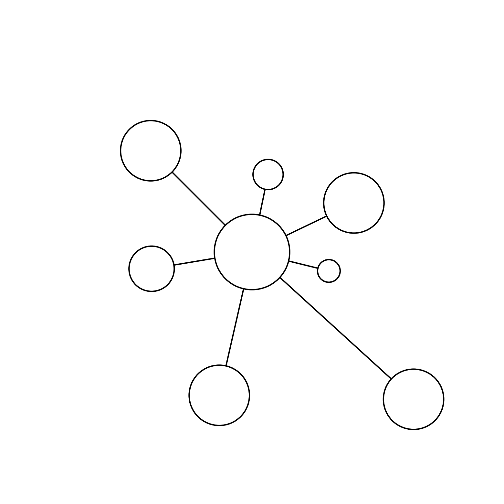

Logo#
From the point of view of form, the type of all the arts is the art of the musician - Oscar Wilde
Show code cell source
import matplotlib.pyplot as plt
import numpy as np
# Function to draw a hub and spoke diagram with specified node sizes and lengths
def draw_hub_and_spoke(hub_size, spoke_specs, filename, wedge_thickness=3, outline_width=3):
# Define the hub position
hub = np.array([0, 0])
# Create the figure and axis with larger dimensions
fig, ax = plt.subplots(figsize=(20, 20))
# Draw the hub
hub_circle = plt.Circle(hub, hub_size, color='white', ec='black', lw=outline_width, zorder=2)
ax.add_patch(hub_circle)
# Draw the spokes
for angle, (length, size) in spoke_specs:
# Calculate spoke position based on angle and length
spoke = np.array([length * np.cos(angle), length * np.sin(angle)])
# Draw line from hub to spoke
ax.plot([hub[0], spoke[0]], [hub[1], spoke[1]], 'k-', lw=wedge_thickness, zorder=1)
# Draw spoke node
spoke_circle = plt.Circle(spoke, size, color='white', ec='black', lw=outline_width, zorder=2)
ax.add_patch(spoke_circle)
# Set aspect of the plot to be equal
ax.set_aspect('equal')
# Hide axes
ax.axis('off')
# Set limits to make sure everything fits in the plot
max_extent = max(length for angle, (length, size) in spoke_specs) + max(size for angle, (length, size) in spoke_specs)
ax.set_xlim([-max_extent, max_extent])
ax.set_ylim([-max_extent, max_extent])
# Save the plot to a file with tight bounding box and no padding
plt.savefig(filename, bbox_inches='tight', pad_inches=0)
# Show the plot
plt.show()
hub_size = 1
# Specify the angles (in radians), lengths, and sizes for each spoke in clockwise order
spoke_specs = [
(np.pi / 2.3, (2.1, 0.4)), # first
(np.pi / 7, (3, 0.8)), # 2nd
(7 * np.pi / 3.64, (2.1, 0.3)), # 3rd
(3 * np.pi / 1.7, (5.8, 0.8)), # 4th
(5 * np.pi / 3.5, (3.9, 0.8)), # 3rd
(np.pi / 0.95, (2.7, 0.6)), # 2nd
(3 * np.pi / 4, (3.8, 0.8)) # last
]
# Specify the filename to save the plot
filename = "../figures/hub_and_spoke.png"
# Call the function to draw the hub and spoke diagram and save it to a file
draw_hub_and_spoke(hub_size, spoke_specs, filename, wedge_thickness=3, outline_width=3)

Show code cell source
import networkx as nx
import matplotlib.pyplot as plt
def add_fern_edges(G, start, depth, angle, scale):
if depth == 0:
return start
end = (start[0] + scale * angle[0], start[1] + scale * angle[1])
G.add_edge(start, end)
new_angle1 = (angle[0] * 0.6 - angle[1] * 0.4, angle[0] * 0.4 + angle[1] * 0.6)
new_angle2 = (angle[0] * 0.6 + angle[1] * 0.4, -angle[0] * 0.4 + angle[1] * 0.6)
child1 = add_fern_edges(G, end, depth - 1, new_angle1, scale * 0.7)
child2 = add_fern_edges(G, end, depth - 1, new_angle2, scale * 0.7)
return end
def create_fern_graph(depth, scale=1):
G = nx.Graph()
start = (0, 0)
angle = (0, 1)
child1 = add_fern_edges(G, start, depth, angle, scale)
return G, start, child1
# Generate the fern graph
fern_depth = 7 # Adjust depth for more or fewer branches
fern_graph, father, son = create_fern_graph(fern_depth)
# Find the children of "Father"
children = list(fern_graph.neighbors(father))
# Ensure there are at least two children
if len(children) >= 2:
# Label the edges as "Son" and "HolySpirit"
edge_labels = {
(father, children[0]): "Son",
(father, children[1]): "HolySpirit"
}
else:
edge_labels = {}
# Define colors
leaf_color = '#5F9E54' # A green between lime and cabbage
stem_color = '#3B6631' # A darker green for the stem
# Visualize the fern
plt.figure(figsize=(8, 12))
# Draw edges with different colors
edges = fern_graph.edges()
colors = [stem_color if i == 0 else leaf_color for i, (u, v) in enumerate(edges)]
pos = {node: node for node in fern_graph.nodes()}
nx.draw(fern_graph, pos, with_labels=False, node_size=0, edge_color=colors, width=2)
# Draw edge labels if they exist
if edge_labels:
nx.draw_networkx_edge_labels(fern_graph, pos, edge_labels=edge_labels, font_size=12)
plt.axis('off')
# Save the image
# plt.savefig("/Users/apollo/Documents/rhythm/music/kitabo/ensi/figures/fern_fractal.png", dpi=300, bbox_inches='tight')
plt.show()


Extraordinary. Parent is “Father” and children are “Son” and “Holy Spirit”. Everything else springs from these two children: the wave-particle duality of the entire cosmos!#
1. f(t)
\
2. S(t) -> 4. y:h'(t)=0;t(X'X)X'Y -> 5. b -> 6. SV'
/
3. h(t)
ii: Departure 1, 2, 3#
Sensory acuity: vision, hearing, smell, balance, glucose
Memory & cognitive: integrity, decline, tests
Physical activty: sarcopenia, brisk, dynamometer
V: Struggle 4#
Frailty: loneliness, isolation, usefulness
I: Return 5, 6#
Independence: ADLs, IADL
Hard-outcomes: shuffling, reflexes, falls, hospitalization, organ-failure, death
_config.yml
Experiment with a cropped version of ../figures/hub_and_spoke.png or revert to the template below
# A default configuration that will be loaded for all jupyter books
# Users are expected to override these values in their own `_config.yml` file.
# This is also the "master list" of all allowed keys and values.
#######################################################################################
# Book settings
title : Template # The title of the book. Will be placed in the left navbar.
author : # The author of the book
copyright : "2025" # Copyright year to be placed in the footer
logo : "https://github.com/jhufena/jhufena.github.io/blob/main/png/hub_and_spoke.jpg?raw=true" # A path to the book logo
email : "abikesa.sh@gmail.com"
exclude_patterns : ["LICENSE.md"] # Patterns to skip when building the book. Can be glob-style (for example "*skip.ipynb")
#######################################################################################
# Execution settings
execute:
execute_notebooks : auto # Whether to execute notebooks at build time. Must be one of ("auto", "force", "cache", "off")
cache : "" # A path to the jupyter cache that will be used to store execution artifacts. Defaults to `_build/.jupyter_cache/`
exclude_patterns : ["LICENSE.md"] # A list of patterns to *skip* in execution (for example a notebook that takes a really long time)
#######################################################################################
# HTML-specific settings
html:
navbar_number_sections : False # Add a number to each section in your left navbar
home_page_in_navbar : False # Whether to include your home page in the left Navigation Bar; I like this!!!!!!!
use_repository_button : False # Whether to add an "Repository" button to pages. If `true`, repository information in repository: must be filled in
use_issues_button : False # Whether to add an "Open issue" button to pages. If `true`, repository information in repository: must be filled in
use_edit_page_button : False # Whether to add an "Suggest edit" button to pages. If `true`, repository information in repository: must be filled in
extra_footer : |
Copyright © 2025 ADM
comments:
hypothesis : False # For data collection in top right corner
extra_css:
- "_static/custom.css"
#######################################################################################
# Launch button settings
launch_buttons:
notebook_interface : "classic" # The interface interactive links will activate ["classic", "jupyterlab"]
binderhub_url : "https://mybinder.org" # The URL of the BinderHub (for example, https://mybinder.org)
jupyterhub_url : "" # The URL of the JupyterHub (for example, https://datahub.berkeley.edu)
thebelab : false # Add a thebelab button to pages (requires the repository to run on Binder)
repository:
url : https://github.com/abikesa/template # The URL to your book's repository
path_to_book : "book/website" # A path to your book's folder, relative to the repository root.
branch : main
#######################################################################################
# Advanced and power-user settings
sphinx:
extra_extensions :
- 'sphinx_panels'
- 'sphinxcontrib.bibtex'
config : # key-value pairs to directly over-ride the Sphinx configuration
language : en
html_show_copyright : false
suppress_warnings :
- 'app.add_node'
- 'app.add_directive'
- 'app.add_role'
myst_heading_anchors : 5
bibtex_bibfiles :
- _bibliography/references.bib
bibtex_reference_order: 'citation'
bibtex_default_style: 'unsrt' # 'plain'
bibtex_reference_style: 'super' # 'label' # 'author_year' (this worked)
bibtex_cite_style: 'super' #'numeric' (for diff. jb version)
bibtex_footbibliography_header: ''